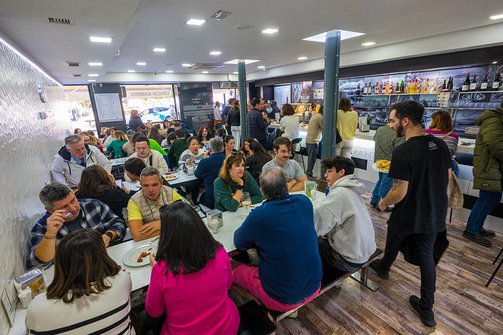
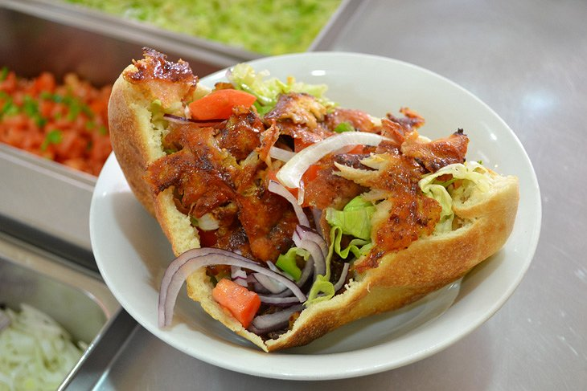
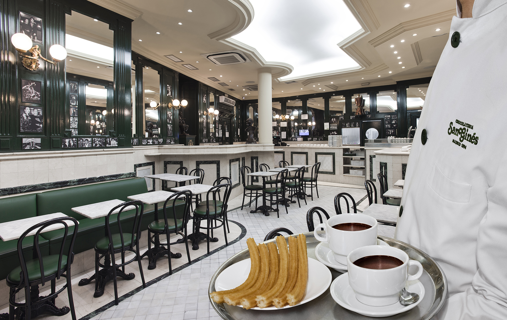
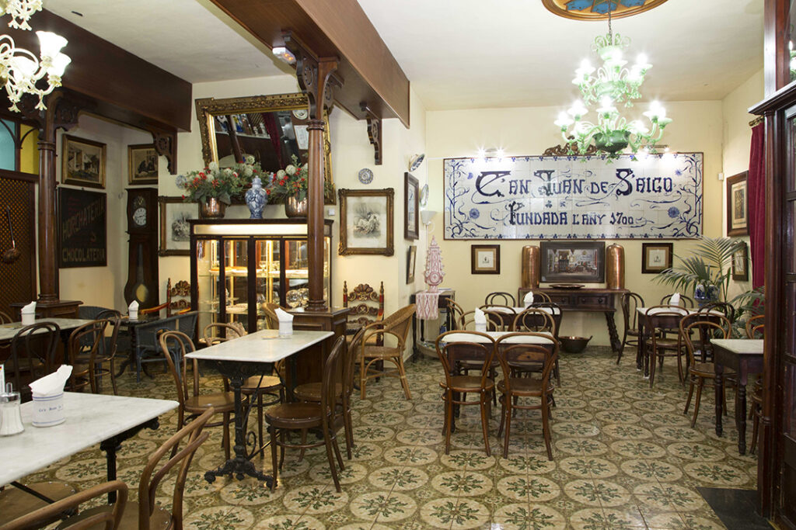

Guía Gastronómica de España: lo mejor que comí en cada ciudad
Durante mi viaje por España, una de las cosas que más disfruté fue la comida. Estuve en Mallorca, Madrid, Barcelona y Granada, y en cada lugar encontré sabores únicos, desde platos tradicionales hasta comida callejera. Acá te dejo lo que más me gustó, por ciudad, como una mini guía para cualquier amante de la comida.
Las tapas se ganaron mi corazón. No hay nada como sentarse en una terraza, pedir una bebida y que te traigan una tapita de regalo (en Granada, esto pasa siempre). Comí desde tortilla hasta croquetas, papas bravas, paella y jamón ibérico, todo servido en porciones chicas que te dan ganas de seguir probando. En Granada si o sí hay que ir al bar de tapas Los Diamantes.
Algo que no esperaba amar tanto fueron los kebabs y dürums. Están por todos lados, especialmente en las ciudades más grandes, y son perfectos para comer algo rico, rápido y barato. El pan, las salsas, la carne bien condimentada… todo suma. Recomiendo muchísimo el Restaurant Bella Istambul, en Palma de Mallorca
En Madrid probé el famoso bocata de calamares cerca de la Plaza Mayor, y la verdad es que entendí por qué es tan icónico. Simple pero sabroso, con calamares fritos crocantes y pan fresco. Otro clásico que no podía faltar fue el chocolate caliente con churros en San Ginés, una chocolatería histórica que está abierta desde 1894. Ideal para un desayuno o una merienda bien madrileña.
En Mallorca, una joya que me sorprendió fue la coca de patata de Valldemossa. Un dulce suave, esponjoso, perfecto para acompañar con un café con leche mientras mirás las montañas del pueblo. Y en Palma, recomiendo muchísimo pasar por Ca’n Joan de s’Aigo, una cafetería tradicional que existe desde el siglo XVIII. Probé helado artesanal, ensaimadas y más coca de patata, todo riquísimo y con un ambiente súper auténtico.
España es un paraíso para los que amamos comer, y lo mejor es que siempre hay algo nuevo por descubrir, incluso en lo más simple. Quiero volver solo para seguir probando más.
Anterior Siguiente